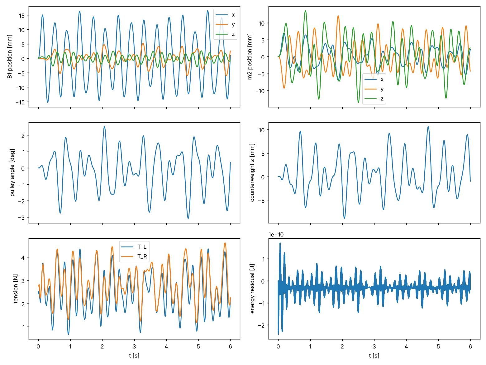

Home Simulation Drones CAD Mass-Spring-Damper Simulation
Python, NumPy, SciPy. In progress.
I wanted a simulation that uses most of what I've learned in dynamics in one system, so I wrote a solver for coupled 3D mass-spring-damper systems. The first system I set up has a rigid body, a point mass, a pulley, and a counterweight, connected by springs, dampers, and elastic strings, with four separate driving inputs.
System diagram and equations of motion. PDF with free body diagrams .
What's in it
A rigid body with 6 degrees of freedom. The springs attach off-center, so they create moments too.
Springs at angles, using the full 3D geometry, so their directions change as things move.
Strings over a pulley that can only pull, never push.
One spring with a cubic term, so it gets stiffer as it stretches.
Four inputs: a moving wall, an unbalanced rotor, a harmonic force, and a motor torque on the pulley.
Each spring/damper element gives a force along the line between its two ends:
$$\mathbf{F}_e = \left(k_e\delta_e + \kappa_e\delta_e^3 + c_e\dot L_e\right)\hat{\mathbf n}_e, \qquad \delta_e = L_e - L_{0e}$$
and the pulley follows
$$I_p\ddot\theta = R(T_R - T_L) - c_\theta\dot\theta - k_\theta\theta + \tau_0\sin\Omega_p t$$
Checking it
To make sure the code is right, verify.py checks four things:
The static equilibrium it finds really has all forces balanced.
The linearized stiffness matrix is symmetric and positive definite, so the equilibrium is stable.
The natural frequencies from the linearized model match the peaks in an FFT of the full nonlinear free vibration (worst error 0.17%).
With no damping and no drives, total energy stays constant.
Output: verify_output.txt .

All four drives on. Positions, string tensions, and the energy balance error (under 1e-9 J).
Code
params.py - masses, stiffnesses, geometrymodel.py - equations of motion and equilibriummodal.py - linearization and mode shapesrun.py - runs the simulation and makes plotsverify.py - the checks above
Next
Frequency sweeps to show the jump from the cubic spring, mode shape plots, and an animation.